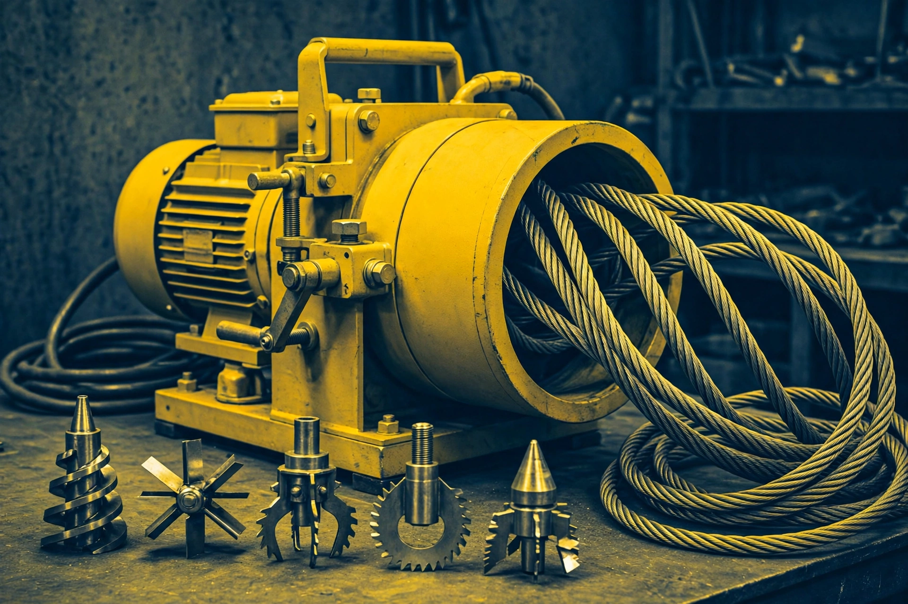
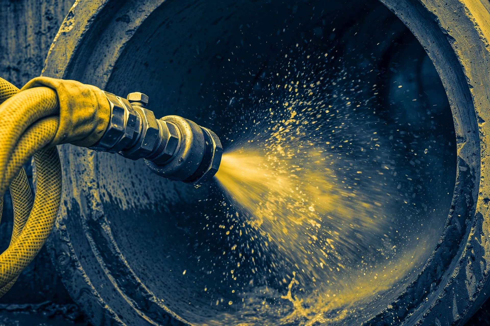
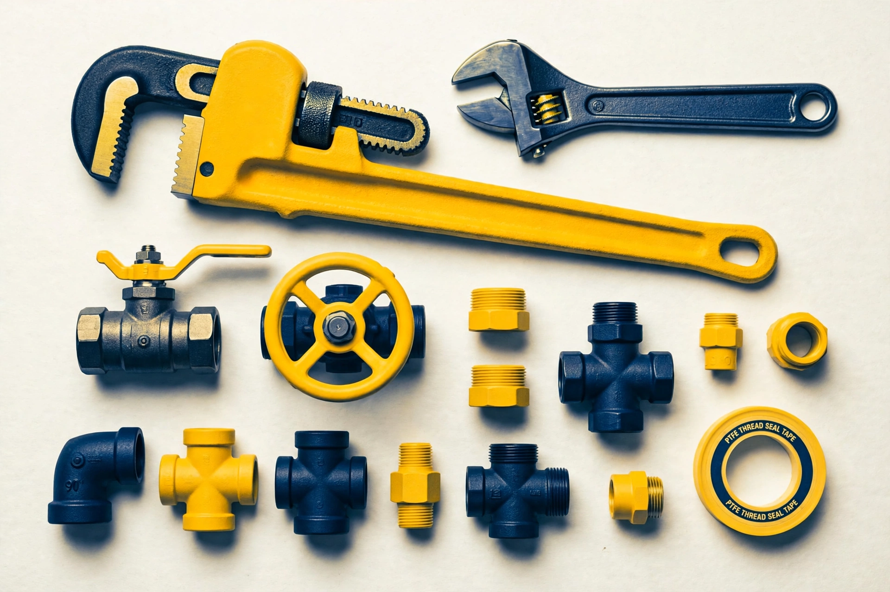

01 — Prioridade alta
Feche o registro geral
Vá ao cavalete principal na calçada ou ao registro do banheiro / área de serviço e gire no sentido horário até fechar.
[Protocolo de despacho ativo // Goiânia & região]
Status: prontidão total — plantão 24h
Não espere a água danificar móveis ou comprometer a estrutura. Atendemos chamados graves de madrugada, no feriado e no domingo — 24 horas, todos os dias.
Atendimento humano, direto com o técnico. Escala operacional: 24h / 7 dias. Canal preferencial: WhatsApp. 5,0 no Google — 387 avaliações.
[Ação imediata do morador]
01 — Prioridade alta
Vá ao cavalete principal na calçada ou ao registro do banheiro / área de serviço e gire no sentido horário até fechar.
02 — Contenção de refluxo
Não acione descargas, máquinas de lavar ou torneiras adicionais. A água despejada em outro ponto empurra mais dejetos de volta.
03 — Perigo de corrosão
Não jogue soda cáustica ou ácidos. Esses produtos danificam juntas de PVC e solidificam a gordura.
04 — Pré-diagnóstico via WhatsApp
Grave alguns segundos mostrando o ralo ou caixa afetada e encaminhe via WhatsApp. O especialista já separa o equipamento adequado.
[Cobertura de incidentes 24 horas]
Intervenção imediata
Água com dejetos retornando pelo vaso sanitário, ralo do banheiro ou grelha da lavanderia.
Segurança estrutural
Tubos rompidos dentro de alvenaria ou forro, com infiltração intensa e goteiras.
Suporte corporativo
Restaurantes, bares e cozinhas industriais paralisados. Atendimento sem parar o salão, conforme combinado.
Controle sanitário
Placas de gordura e resíduos orgânicos inundando calçadas e garagens, com forte odor.
Alerta meteorológico
Folhagens, terra ou detritos obstruindo condutores verticais de prédios e casas durante tempestades.
[Seu problema não está na lista?]
Nossa equipe avalia casos atípicos e rompimentos. Envie foto ou vídeo e receba a orientação.
Consultar plantão agora[Tecnologia de desobstrução mecânica]

Cabos espirais de aço com ponteiras cortantes trituram gordura compactada e restos de obra.
✔ Ponteiras intercambiáveis
✔ Não quebra pisos nem cerâmicas na grande maioria dos casos

Jato de água em alta pressão que lava as paredes internas da tubulação.
✔ Limpeza hidrodinâmica
✔ Ideal para redes de gordura e esgoto
✔ Restaura o diâmetro interno do cano

Disponibilidade de vídeo-inspeção [a confirmar] no chamado. Diagnóstico visual do bloqueio, quando disponível.
✔ Localização do bloqueio
✔ Confirmação de disponibilidade no chamado
[Raio de ação & logística urbana]
Endereço da base
Rua Francisco Alves / BRT, Qd 13 LT 12, Residencial Recanto do Bosque, Goiânia - GO, 74474-330
Endereço anterior no cadastro: Rua RB 2, Qd 10 Lt 32, 74474-307 [a confirmar].
Cidades vizinhas / metropolitana: [a confirmar por região]
Atendimento fora do município de Goiânia depende da disponibilidade de escala no momento do chamado. Anápolis [sob consulta — rota especial]. Confirme no WhatsApp antes de aguardar.
Consultar meu bairro →Não publicamos promessas de tempo em minutos nem número de veículos. O prazo de chegada é confirmado no chamado, no WhatsApp, conforme a escala do momento.
[Plantão 24h — Goiânia e região]
Clique abaixo para abrir o WhatsApp do Soares. A triagem é imediata e o atendimento é confirmado no chamado.